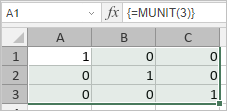

MUNIT funkcija
MUNIT funkcija je jedna od funkcija za matematiku i trigonometriju. Koristi se za vraćanje jedinicne matrice za zadatu dimenziju.
Sintaksa
MUNIT(dimension)
MUNIT funkcija ima sledeći argument:
| Argument | Opis |
|---|---|
| dimension | Ceo broj koji određuje dimenziju jedinicne matrice koju želite da vratite. Funkcija vraća niz. Dimenzija mora biti veća od nule. |
Napomene
Napomena: ovo je formula niza. Za više informacija pročitajte članak Umetanje formula niza.
Kako primeniti MUNIT funkciju.
Primeri
Slika ispod prikazuje rezultat koji vraća MUNIT funkcija.
